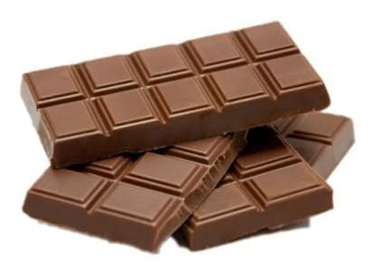
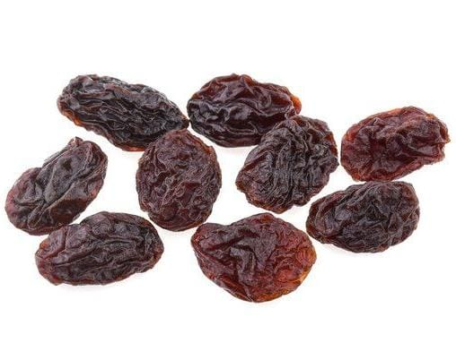
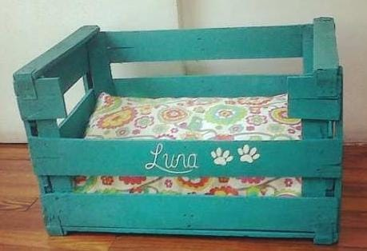
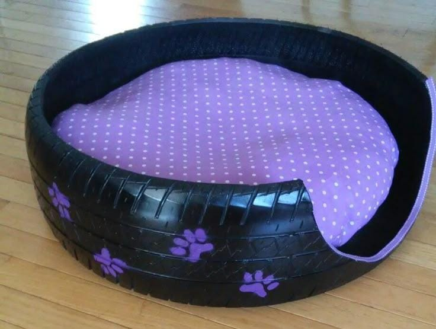
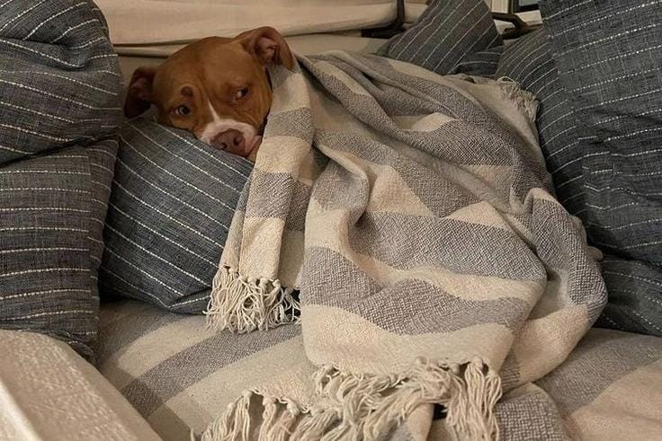

Huellitas
¿Qué Darles?
Una excelente manera de ser "eco" con las sobras es compartir con tu perro, pero es crucial saber qué alimentos son seguros para su consumo y cuáles no. Esto te ayudará a evitar visitas inesperadas al veterinario y a mantener a tu perro sano y feliz. Una alimentación adecuada es crucial para la salud y bienestar general de los perros, ya que les proporciona la energía y nutrientes necesarios para crecer, desarrollarse y mantenerse fuertes y activos.
Proteínas (sin condimentos)
- Carne de Pollo: cocido o desmenuzado
- Pescado: Salmón, atún o sardinas (en agua, sin aceite ni sal)
- Huevos: Cocidos (revueltos o duros)
Frutas y verduras (sin semillas)
- Zanahorias: Crudas o cocinadas
- Manzana: Sin corazón ni semillas
- Calabaza: Cocida y en puré
- Espinacas: Cocidas en pequeñas porciones
- Brócoli: En pequeñas cantidades y cocido
Cereales y lácteos (con moderación)
- Avena: Cocida y sin azúcar
- Arroz: blanco o integral (Cocido)
- Yogur: natural sin azúcar (sin xilitol)
Croquetas (Alimento Seco)
- Económicas y prácticas: Suelen ser la opción más asequible y tienen una larga vida útil, lo que las hace fáciles de almacenar.
- Salud dental: La textura crujiente de las croquetas ayuda a reducir la placa y el sarro, contribuyendo a la salud bucal de tu perro
- Nutrición completa: Las marcas de calidad están formuladas para ser nutricionalmente completas y balanceadas, cubriendo todos los requerimientos vitamínicos y minerales.
Enlatados y sobres (Alimento húmedo)
Ventajas:
- Ingesta: Suelen tener un sabor y aroma más intensos, lo que los hace ideales para perros con poco apetito o que son mayores y tienen problemas dentales.
- Mayor hidratación: Su alto contenido de agua es beneficioso para perros que no beben suficiente agua, o aquellos con problemas renales o urinarios.
Desventajas:
- Mayor costo: Son significativamente más caros que las croquetas.
- Menor durabilidad: Una vez abiertos, necesitan refrigeración y se echan a perder más rápido. No se pueden dejar en el plato por mucho tiempo..
- No ayudan a la salud dental: Su textura suave no contribuye a la limpieza de los dientes.
Alimentos prohibidos
El chocolate es malo para los perros porque el cacao contiene dos sustancias tóxicas para ellos. Son la teobromina y la mucho más conocida cafeína. Ambas son alcaloides, en concreto metilxantinas. Además, el chocolate contiene también azúcares y grasas, en mayor o menor proporción según el tipo. El azúcar nunca debe formar parte de la dieta de los perros y un consumo excesivo de grasas puede provocar una inflamación del páncreas, denominada pancreatitis, que es una enfermedad de gravedad que tiene que tratar el veterinario.
La cebolla y el ajo contienen compuestos llamados tiosulfatos. Cuando un perro ingiere estos compuestos, el tiosulfato daña sus glóbulos rojos, lo que causa su destrucción. Este proceso se conoce como anemia hemolítica. La anemia hemolítica es una condición grave donde la sangre del perro no puede transportar suficiente oxígeno a los tejidos, lo que afecta a órganos vitales. A diferencia de las personas, los perros no tienen la enzima necesaria para procesar estos compuestos de manera segura.
La toxicidad de las uvas y pasas no depende de la cantidad, ya que incluso una pequeña porción puede ser suficiente para causar una reacción grave en algunos perros. Tampoco se ha encontrado una relación clara con el peso o el tamaño del perro. Lo que sí se sabe es que pueden causar un daño irreversible en los riñones. Los expertos sugieren que es mejor evitar por completo que los perros coman uvas o pasas, sin importar su tamaño o la cantidad. El riesgo es demasiado alto.
Darle huesos cocidos a tu perro es muy peligroso, sin importar de qué animal provengan. El calor del cocinado hace que los huesos se vuelvan quebradizos y propensos a astillarse. Estas astillas afiladas pueden causar perforaciones internas en el sistema digestivo de tu perro, lo que puede llevar a infecciones, hemorragias e incluso la muerte.
Creemos su espacio seguro
Puedes crear una cama cómoda y personalizada usando materiales que probablemente ya tienes en casa o que puedes conseguir de forma muy barata.
Cama con caja de madera
Cama con llanta
- Cama con una caja de cartón: Si tienes una caja de cartón grande y resistente, puedes forrarla con una manta suave y una almohada vieja. Corta una de las paredes de la caja para que tu perro pueda entrar y salir fácilmente. Es una solución temporal y muy económica.
- Cama con una maleta vieja: Si tienes una maleta que ya no uses, puedes convertirla en una cama con estilo. Simplemente abre la maleta, retira el forro interior si es necesario, y coloca una almohada o un cojín en el fondo. Es ideal para razas pequeñas o medianas.
- Cama con un neumático reciclado: Si tienes acceso a un neumático viejo, puedes lavarlo y pintarlo con pintura no tóxica. Una vez seco, coloca un cojín redondo que encaje en el interior. Es una cama muy resistente y duradera, perfecta para perros grandes o activos.
No necesitas comprar una cama de perro costosa. Puedes usar objetos que ya tienes en casa para crear un lugar cómodo.
- Mantas y sábanas viejas: Cualquier manta o sábana que ya no uses puede ser perfecta. Simplemente dóblala para crear una superficie suave. Puedes tener varias para cambiarlas y lavarlas fácilmente.
- Almohadas y cojines: Utiliza almohadas o cojines viejos y cúbrelos con fundas resistentes que puedas lavar. Esto le dará un soporte suave a tu perro y mantendrá el espacio limpio.
Cama con sabanas y almohadas
Coloca la cama de tu perro en un rincón tranquilo de la casa, lejos del tráfico constante de la gente, que no sea demasiado frío ni demasiado caluroso. Evita las corrientes de aire, las ventanas con mucho sol directo o los pasillos donde se sienta el frío del suelo.
Su salud
Cuidar de la salud de tu perro es la mejor manera de demostrarle tu amor. Un perro sano es un perro feliz que disfruta de una vida activa. Al mantener al día sus vacunas, ofrecerle una nutrición adecuada y ejercicio, no solo previenes enfermedades costosas, sino que también fortaleces el vínculo entre ambos. Un perro bien cuidado tiene mayores probabilidades de vivir más años, permitiéndote disfrutar de su compañía por mucho más tiempo.
Visitas al veterinario
- Revisiones anuales: Llevar a tu perro a chequeos anuales permite detectar a tiempo posibles enfermedades o problemas de salud. El veterinario puede realizar un examen físico completo, revisar el peso y el estado general de tu mascota.
- Vacunas y desparasitación: Mantén el calendario de vacunas y desparasitación (interna y externa) al día. Esto protege a tu perro de enfermedades comunes y parásitos como pulgas, garrapatas y gusanos intestinales..
- Esterilización o castración: Además de ayudar a controlar la sobrepoblación, la esterilización puede prevenir ciertas enfermedades , como infecciones uterinas y tumores de mama en las hembras, y problemas de próstata en los machos.
Ejercicio y estimulación
- Paseos diarios: Los paseos son esenciales. No solo sirven para que haga sus necesidades, sino que le dan la oportunidad de socializar, explorar y quemar energía.
- Juegos en casa: Dedica tiempo a jugar con él. Los juegos de buscar, de cuerda o con juguetes interactivos mantienen su mente activa y fortalecen el vínculo entre ustedes.
Higiene canina
Una buena higiene es fundamental para la salud y el bienestar de tu perro. Mantenerlo limpio va más allá de un simple baño; el cepillado regular, el cuidado dental y la limpieza de sus oídos y uñas previenen problemas de salud y te ayudan a detectar posibles anomalías a tiempo. Con una rutina de higiene constante, aseguras que tu perro no solo esté limpio y cómodo, sino que también viva una vida más feliz y sana.
Baño
Bañar a tu perro es necesario, pero no debe ser algo muy frecuente para no eliminar los aceites naturales de su piel, que la protegen y mantienen su pelaje sano.
Frecuencia: Generalmente, se recomienda bañar a los perros cada dos o tres meses, pero a veces es preferible báñarlo solo cuando sea realmente necesario. A veces bañarlo en exceso puede resecar su piel.

Productos:Usa un champú específico para perros. O también puedes bañar a tu perro con un champú neutro para bebés, que es suave para su piel y no tiene químicos agresivos
Secado:Seca bien a tu perro con una toalla que ya no uses o con alguna playera de algodon vieja a la quepuedas darle ese nuevo uso. Otra opción es en caso de que haga buen tiempo, déjalo secar al sol mientras juegas con él para que no se resfríe.
Cepillado de pelo
El cepillado regular es clave para mantener un pelaje saludable y sin nudos..
Frecuencia: Cepíllalo una o dos veces por semana para perros de pelo corto y diariamente si tiene el pelo largo, para evitar enredos grandes.
Beneficios: El cepillado ayuda a eliminar el pelo muerto, la suciedad y los enredos. Además, distribuye los aceites naturales de la piel y es una excelente oportunidad para revisar la piel de tu perro en busca de bultos, heridas o parásitos como pulgas y garrapatas.
Herramientas:Puedes usar un cepillo de cerdas o incluso un guante de goma si tu perro tiene el pelo corto. Un peine de metal con dientes anchos funciona muy bien para desenredar sin tirones.
Cuidado dental casero
El cuidado dental es muy importante y no tiene que ser costoso.
Cepillado: No necesitas un cepillo especial. Puedes usar un cepillo de dientes de bebé o incluso envolver una gasa limpia alrededor de tu dedo. En lugar de una pasta dental cara, puedes usar una mezcla de bicarbonato de sodio y agua. Nunca uses pasta de dientes para humanos.
Alternativas: Ofrecerle juguetes masticables y huesos de carnaza seguros (supervisado) ayuda a limpiar sus dientes de forma natural.
Cuidado de orejas y uñas
Limpieza de orejas: Usa una bolita de algodón o una gasa humedecida en agua tibia para limpiar la parte exterior de la oreja. Si ves suciedad dentro, puedes usar una solución de agua con un poco de vinagre de manzana. Nunca uses hisopos ni introduzcas nada en el canal auditivo..
Uñas: Si no quieres comprar un cortauñas, puedes llevarlo a pasear por superficies de cemento o asfalto, que ayudan a desgastar sus uñas de forma natural. Si aun así están muy largas, un veterinario puede cortárselas por un costo bajo.